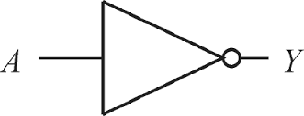
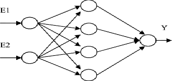

Calculadora da Tabela-verdade
Projeto feito na matéria de Algoritmos e Lógica de Programação. Desenvolvido na linguagem C, no Qt Creator.
27/04/2020, 13:55.

Classificador de imagens
Projeto feito na matéria de Tópicos Avançados em Informática II. Teve a proposta do desenvolvimento de uma rede neural que fosse capaz de classificar o câncer de mama em benigno ou maligno. Desenvolvido na linguagem Python, usando as bibliotecas Keras e TensorFlow e o google Colab para o treinamento e desenvolvimento da rede neural.
30/04/2020, 15:06.